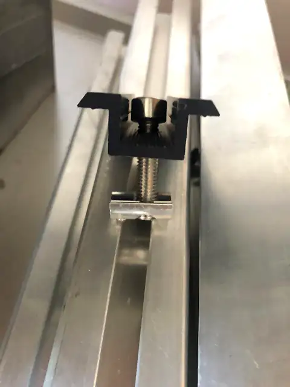
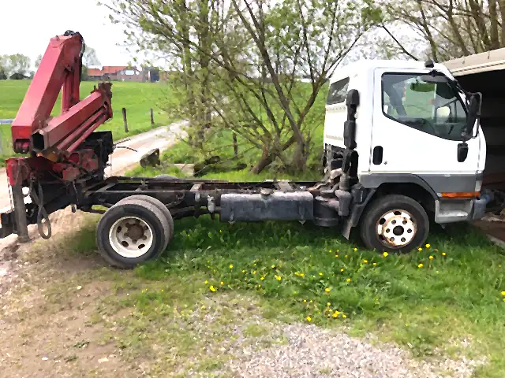

Start / Leistungen / Montage
Montage
Flachdach, Satteldach, Pultdach oder Freifläche: Wir montieren auf jeder Dachform. Was sich ändert, ist das Gestell darunter. Darauf kommt es an.
Von unten nach oben
Wie eine Anlage aufs Dach kommt.

Haken setzen
Auf Ziegeldächern schrauben wir Dachhaken aus Edelstahl auf die Sparren. Auf Blech kommt der Trapezblechschuh, auf dem Flachdach das Gestell.

Schienen ausrichten
Die Aluminiumschienen 40 × 40 mm laufen quer über die Haken. Sie werden mit M8- oder M10-Schrauben befestigt und gerade ausgerichtet.

Module klemmen
Zwischen zwei Modulen sitzt die Mittelklemme mit 2 cm Abstand, am Rand die Endklemme. Beide sind schwarz eloxiert und 70 mm lang.

Kabel führen
Die Leitungen laufen geschützt unter den Modulen zur Hauswand und weiter zum Wechselrichter.
Selbst ausprobieren
Befestigung nach Eindeckung
Wählen Sie, womit Ihr Dach gedeckt ist. Sie sehen, womit wir die Anlage darauf befestigen und welche Teile dazugehören.
Befestigung
Dachhaken aus Edelstahl
Der Haken wird auf den Sparren geschraubt und läuft unter der Pfanne hindurch nach außen. Er ist dreifach verstellbar, damit die Schiene trotz unebener Dachfläche gerade liegt.
- Dachhaken, Grundplatte 140 × 56 mm
- Montageschiene 40 × 40 mm
- End- und Mittelklemmen

Material bis aufs Dach
Schienen sind sechs Meter lang, ein Modul wiegt 22,7 kg. Wo es eng oder hoch wird, bringen wir das Material mit dem Kran-LKW nach oben.
Unser Befestigungsmaterial


Welche Dachform haben Sie?
Schicken Sie uns ein Foto Ihres Daches. Wir sagen Ihnen, wie wir darauf montieren würden.